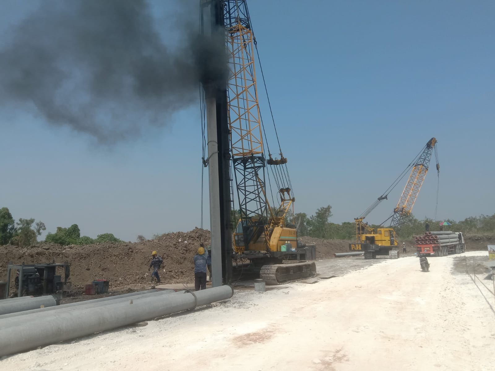

Pengendalian Banjir Kali Lamong
Gresik - Surabaya
No. Kontrak
PB.02.01-An.07.2/01/2025
Pemberi Kerja
BBWS Solo
Periode
2025
Nilai Proyek
Rp 9.562.790.784
Detail Proyek
Proyek ini mencakup lingkup pekerjaan yang komprehensif mulai dari survei awal lapangan, analisis data hidrologi, hingga desain teknis mendalam (Detail Engineering Design). Fokus utama adalah memperkuat sistem pengendalian banjir di sepanjang wilayah Kali Lamong untuk melindungi pemukiman dan infrastruktur vital di kawasan Gresik dan Surabaya.
Pelaksanaan konstruksi diawasi secara ketat untuk memastikan standar kualitas tertinggi, didukung oleh penyusunan rencana operasional dan pemeliharaan jangka panjang demi keberlanjutan fungsi infrastruktur.
Galeri Lapangan

